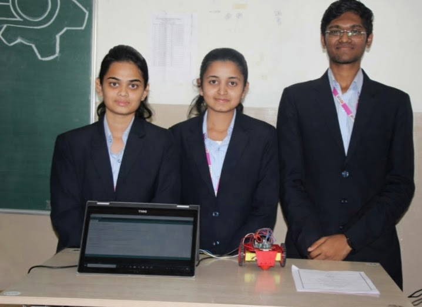
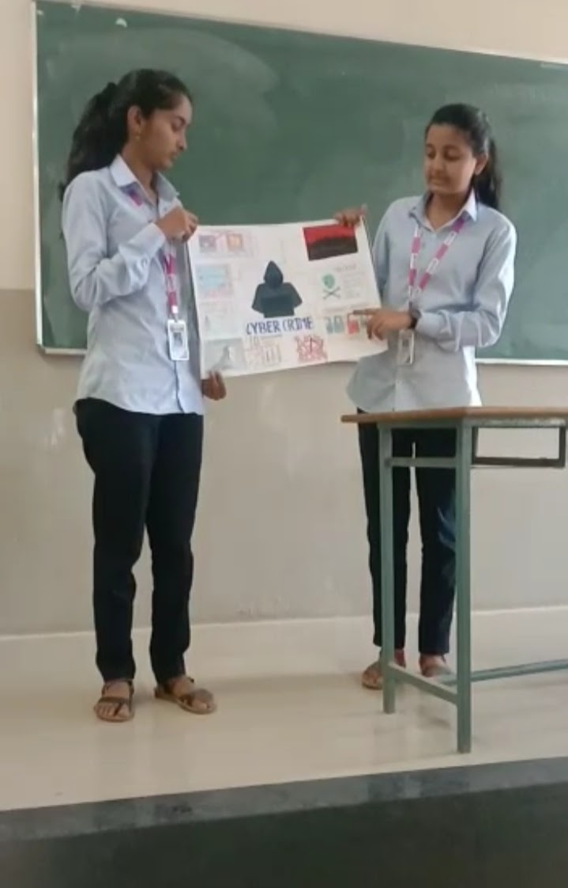
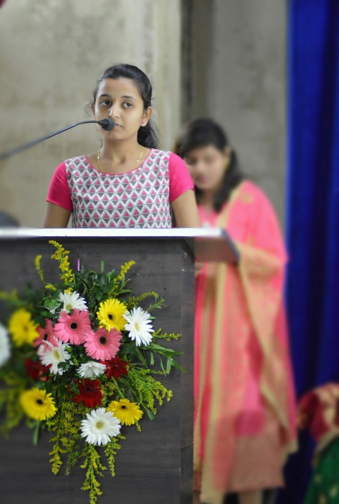

1)MACRA
In that event,there were project exibition for demo as well as working model. And our model aws working named "Robo drive".
2)PROMO PRESS-
IN that event,there were press(media) and actor,actress,director ,producer etc.And I was the Media chief in that event.And our team were asking different questions to star cast taem.

⋄Also I have participated in Poster Presentation Competition held by FESA. Our topic was "CYBER CRIME AND SECURITY".I also participated in essay writing comprtition too.

⋄As being BR og our div,we all CR's and BR's had organised teacgers day event.And also I performed one song there.It was nice experience for me.

⋄As I have intrest in singing,I also participated in our institute's yearly event known as "SNEHA 2020".It aws also great experience for me.I simply built many positive and very helpful qualities inside myself.

Thank you for visiting my Portfolio!!